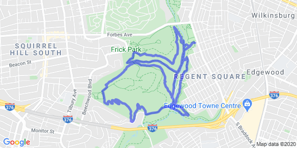

Run For Big Hop
Run For Big Hop
Your Strava activity.
=
This tool only works if calorie data is included in your Strava tracking. In order to enable calorie metrics, you usually just need to tell Strava how much you weigh in your account settings. Sorry about that.
If other issues persist, tell me via my gmail.
Consider this a fan project by a web developer who has both an unhealthy love of Pittsburgh's East End Brewing Company's Big Hop and a healthy love of running and cycling. Connect with the creator on LinkedIn!
The app uses data from each of your latest recorded activities and determines about how many 12 oz. Big Hops worth of calories you burned.
It's using a 174 calorie estimate I found somewhere online . . . if one of the brewers would like to correct me on that, please do!